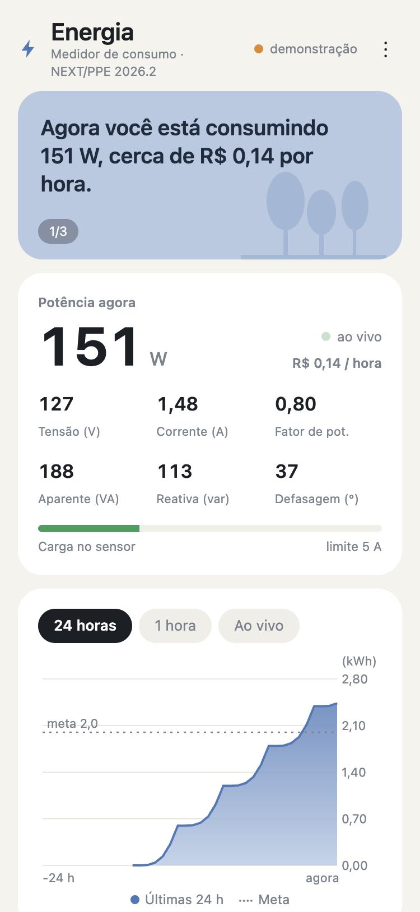
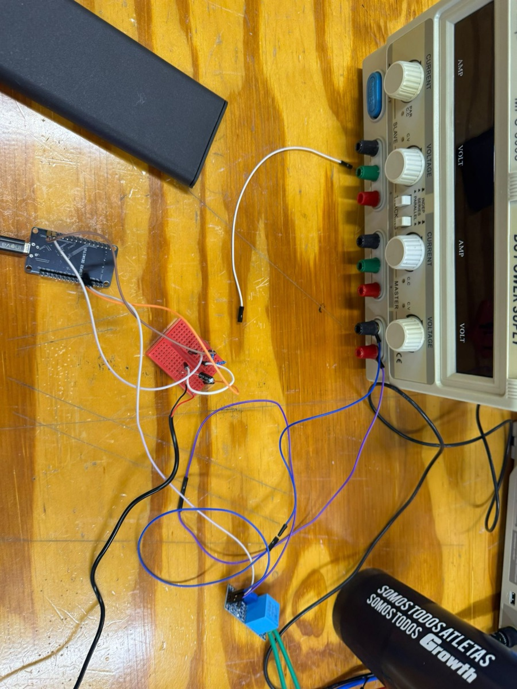
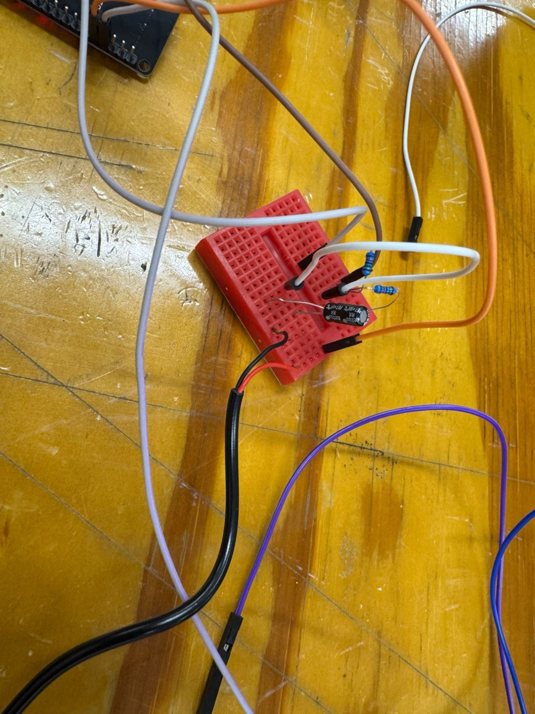
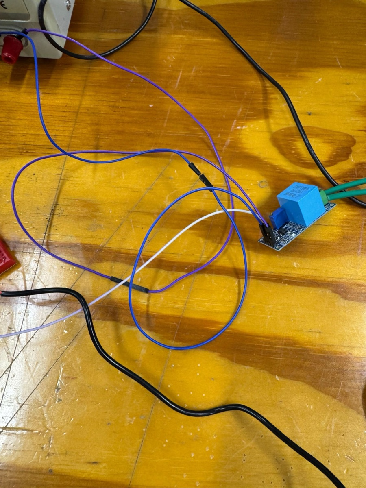
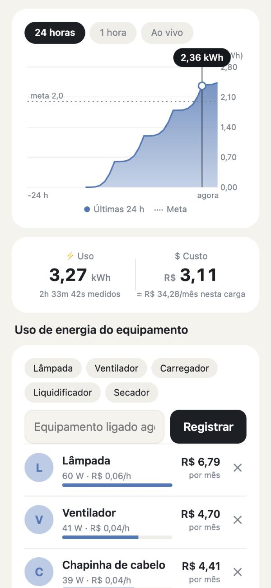
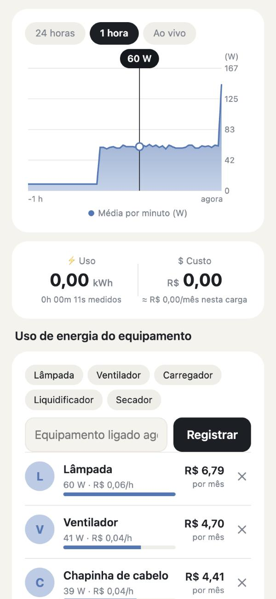
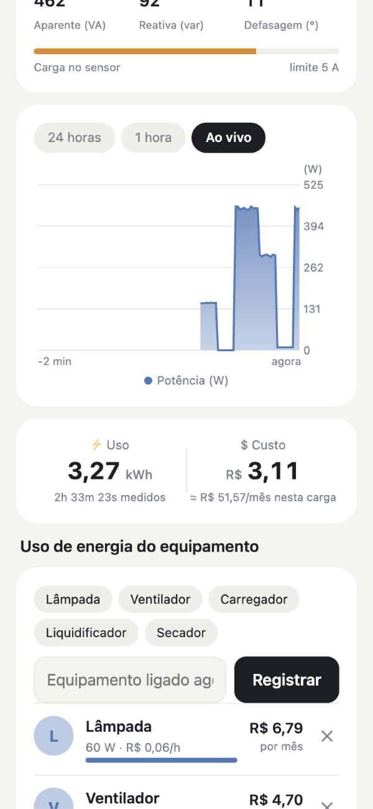
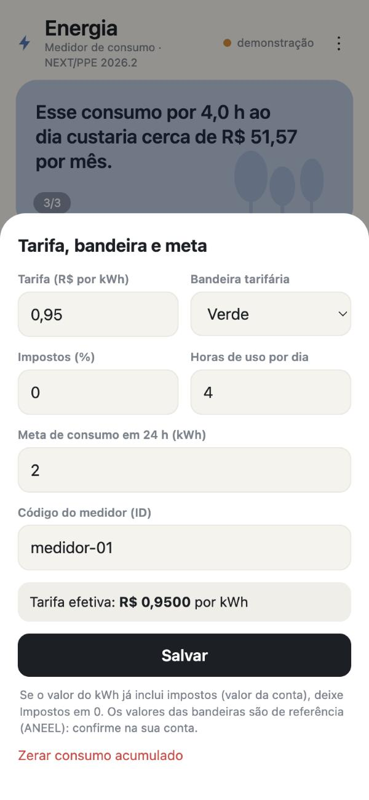
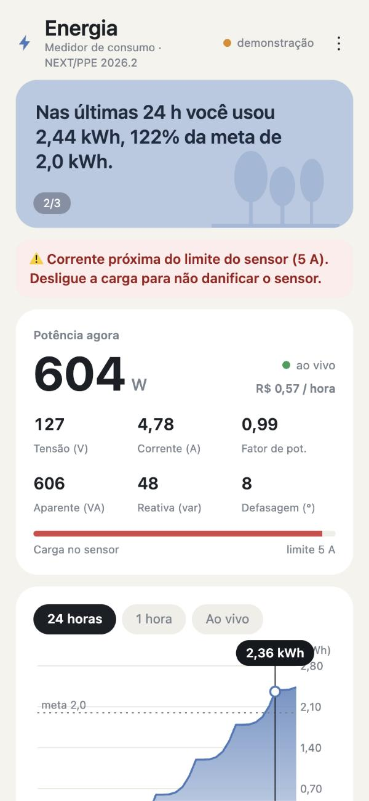
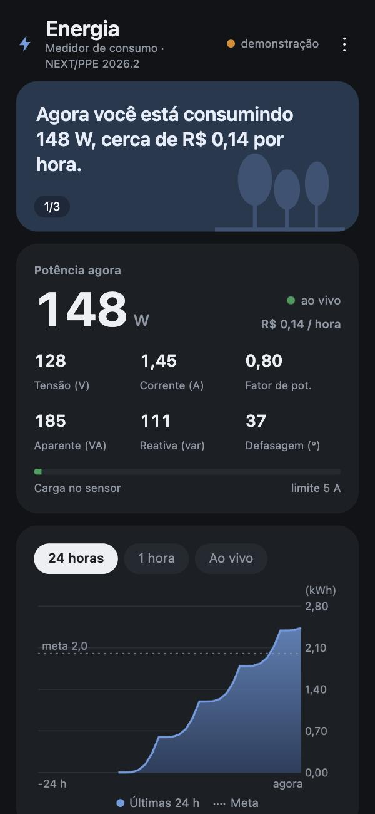

Saiba quanto sua casa consome, em tempo real.
Um medidor de baixo custo com ESP32 que mede tensão e corrente da instalação elétrica, calcula potência, consumo em kWh e o custo estimado, e mostra tudo em um painel no celular.

O projeto
Consumo de energia que dá para enxergar.
Na maioria das casas, o consumo só aparece na conta do mês seguinte, quando já não dá para mudar nada. Este projeto mostra, agora, quanto cada ligação custa.
O problema
Sem um medidor próprio, o morador não relaciona o que liga na tomada com o valor da fatura, e perde a chance de economizar.
A proposta
Medir tensão e corrente com sensores acessíveis, calcular as grandezas elétricas no ESP32 e exibir potência, kWh e custo em uma interface simples no celular.
Para quem
Moradores que querem acompanhar o consumo da residência, comparar equipamentos e definir metas, sem instalar aplicativo.
O que o painel mostra
Como funciona
Do fio da tomada à tela do celular.
O ESP32 mede e calcula. O resultado vai a um broker MQTT, e o painel, aberto no navegador, recebe a mensagem quase na hora. O celular e o ESP32 nunca se falam diretamente, por isso cada um pode estar em uma rede diferente.
SCT-013 (corrente)
e publica
intermediário
no celular
- MedirO ESP32 lê tensão e corrente em uma janela de 200 ms, equivalente a 12 ciclos da rede de 60 Hz.
- CalcularValores eficazes, potência ativa, aparente e reativa, fator de potência e a energia acumulada.
- PublicarUma mensagem em JSON por segundo, mais o histórico das últimas 24 h guardado no broker.
- ExibirO painel assina os mesmos tópicos, desenha os gráficos e converte kWh em reais.
Hardware
Poucos componentes, todos acessíveis.
O ESP32 DevKit V1 lê os dois sensores por entradas analógicas. Como o conversor só mede sinais positivos, a saída de cada sensor é centrada em 1,65 V por um divisor de tensão.
| Componente | Função | Ligação |
|---|---|---|
| ESP32 DevKit V1 ESP-WROOM-32 · USB-serial CP2102 | Amostra os sensores, calcula as grandezas e publica por Wi-Fi | Alimentado por USB |
| ZMPT101B | Sensor de tensão com transformador isolado e ganho ajustável por trimpot | Saída em GPIO34 |
| SCT-013-005 | Transformador de corrente não invasivo (5 A = 1 V) | Saída em GPIO35, com bias de 1,65 V |
| Divisor de bias | Dois resistores de 15 kΩ e um capacitor de 10 µF levam o sinal ao meio da faixa do ADC | 3V3 e GND |
| LED da placa | Indica o estado: pisca rápido (sem Wi-Fi), pisca devagar (sem broker), aceso (online) | GPIO2 |
Bancada de testes



Segurança. A rede elétrica é perigosa. A montagem final deve ficar em caixa fechada, com proteção, e a fiação só deve ser manipulada com tudo desligado da tomada. O sensor de corrente suporta no máximo 5 A (cerca de 635 W em 127 V).
Software
Firmware, protocolo e aplicação.
Três partes independentes se conectam apenas pelo protocolo MQTT. Dá para trocar uma delas sem mexer nas outras.
Firmware do ESP32
Escrito em Arduino (C++) com a biblioteca PubSubClient. Mede, calcula, publica a cada segundo, guarda a energia acumulada na memória e reconecta sozinho se a rede cair.
Protocolo MQTT
Publicação e assinatura por tópicos. Mensagens retidas entregam o histórico a quem abre o painel depois, e o Last Will avisa quando o medidor cai.
Aplicação web
Um único arquivo HTML com JavaScript, sem instalação. Funciona no navegador do celular e é publicada no GitHub Pages a cada atualização do repositório.
Tópicos MQTT
| Tópico | Conteúdo |
|---|---|
…/data | Medição em JSON, uma por segundo |
…/status | online ou offline (retida) |
…/history | Potência média por minuto das últimas 24 h (retida) |
…/cmd | Comandos para o medidor, como reset |
Todos os tópicos ficam sob usf-tcc-energia/<id-do-medidor>/.
Formato da mensagem
// um objeto por segundo { "v": 127.0, // tensão eficaz (V) "i": 0.472, // corrente eficaz (A) "p": 59.7, // potência ativa (W) "s": 59.9, // potência aparente (VA) "q": 4.2, // potência reativa (var) "pf": 1.00, // fator de potência "kwh": 0.00012 // energia acumulada }
Telas da aplicação
Capturas feitas no modo demonstração, com dados simulados.






Painel
Experimente agora.
Ao lado está o painel real, em modo demonstração, com cargas simuladas que ligam e desligam. Não precisa de hardware.
- Custo com a tarifa da sua distribuidora e a bandeira do mês
- Meta mensal com acompanhamento no gráfico
- Gráficos de 24 h, 1 h e ao vivo
- Comparação do consumo de cada equipamento
- Alerta quando a carga passa de 90% do limite do sensor
Para ver os dados de um medidor real, informe o ID do dispositivo em Ajustes.
Resultados e validação
Em que ponto estamos.
Os sensores e o software foram ensaiados individualmente. A etapa atual é a integração completa com o ESP32, a calibração e a comparação das leituras com instrumentos de referência.
| Etapa | Situação |
|---|---|
| Ensaio de corrente (SCT-013-005): 59,3 mV RMS, cerca de 0,297 A contra 0,31 A esperados | Concluído |
| Ensaio de tensão (ZMPT101B): sinal de 60 Hz com amplitude ajustável pelo trimpot | Concluído |
| Testes de software e comunicação (simuladores e broker MQTT, mensagens a cada 1 s) | Concluído |
| Firmware do ESP32 (medição, cálculo, MQTT) | Concluído |
| Aplicação web e publicação no GitHub Pages | Concluído |
| Calibração da tensão (ZMPT101B) contra multímetro | Concluído |
| Calibração da corrente (SCT-013) com cargas conhecidas | Em andamento |
| Ensaios de potência com cargas reais | Em andamento |
| Análise dos erros e conclusões do TCC | Próximo |
Calibração da tensão
A constante CAL_V converte as contagens do ADC em volts. Ela é corrigida pela razão entre o valor do multímetro e o lido pelo ESP32.
# multímetro: 126 V | ESP32: 480 V | CAL_V inicial: 0,25 CAL_V = 0,25 × 126 ÷ 480 CAL_V = 0,0656 V/contagem
Como os ensaios serão avaliados
Cada carga é medida com o ESP32 e com um instrumento de referência. O erro relativo da potência é:
erro (%) = (Pmedida − Pref) ÷ Pref × 100
Também serão calculados a média, o desvio-padrão e a repetibilidade de cada condição.
Tabela de ensaios
| Carga | P nominal (W) | P referência (W) | P medida (W) | Erro (%) |
|---|---|---|---|---|
| Lâmpada 60 W | 60 | a medir | a medir | — |
| Duas lâmpadas 60 W | 120 | a medir | a medir | — |
| Chapinha 40 W | 40 | a medir | a medir | — |
| Ventilador 40 W | 40 | a medir | a medir | — |
| Carregador de celular | — | a medir | a medir | — |
Os resultados serão publicados nesta tabela depois dos ensaios de bancada.
Equipe
Quem fez.
Trabalho de Conclusão de Curso da Universidade São Francisco, Campus Bragança Paulista.
Documentação
Código aberto e reproduzível.
Todo o software está em um repositório público. Dá para montar o seu próprio medidor seguindo o README.
Documentação do projeto
Resumo do TCC dentro do painel.
Informativos de energia
Etiqueta Inmetro, selo Procel, bandeiras e dicas.
Repositório no GitHub
Código, firmware, workflow e instruções.
Firmware do ESP32
Arquivo .ino para a placa DevKit V1.
Código do painel
Aplicação web completa em um arquivo.
Ferramentas de teste
Simulador do ESP32 e assinante MQTT, em Node.js.
Limitações
Broker público
O HiveMQ público não tem senha. Quem souber o identificador do medidor consegue ler os dados, que são só de potência. Um produto real usaria autenticação e TLS.
Limite do sensor
O SCT-013-005 mede até 5 A, cerca de 635 W em 127 V. Cargas maiores, como chuveiros, exigem outro sensor.
Custo estimado
O valor em reais é uma estimativa para conscientização e não substitui o medidor da concessionária.